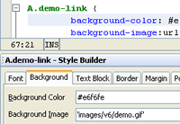
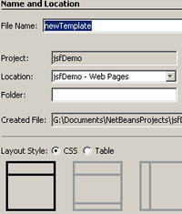
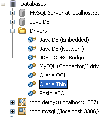
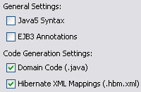

Click image for fullscreen preview
Click image for fullscreen preview
Rapidly build web applications using JavaServer Faces (JSF), JavaServer Pages (JSP), Java Web Start (JNLP), JavaScript, Ajax, CSS, and Applets.
Language-Aware Editor The editor supports HTML, XHTML, JavaScript, JSP, JSF, CSS,
expression language, and assists you with error hints, code completion,
namespace completion, and documentation popups. It also recognizes
Facelets libraries, composite components, and it can auto-import tags. JSF 2.1 SupportNetBeans IDE supports the latest JavaServer Faces (JSF) 2.1 standard, as well as the older 2.0 and 1.2 standards. NetBeans IDE's JSF 2.1 support includes numerous JSF-specific wizards and special functionality provided by the Facelets editor. JSF provides ease-of-use in the following ways:
You can use either JSP or Facelets (XHTML) for the front end of your JSF-enabled web application. You can use the PrimeFaces, RichFaces and IceFaces suites of JSF components. You can learn how to use our JavaServer Faces (JSF) support here.
|
 |
Facelets TemplatesUse Facelets to build and render the JSF component tree for application views. It supports all JSF components and provides development support when EL errors occur by enabling you to inspect the stack trace, component tree, and scoped variables. The IDE provides a Facelets Template wizard for creating Facelets templates, and a Facelets Template Client wizard for creating files that rely on a template. |
 |
Database and Data Binding ToolsCustomize queries, add joins, specify criteria, preview results (and more) with the Query Editor. Use the Database Explorer to make connections to database servers, view and change database schema, view the data in your tables and views, and execute arbitrary SQL statements against a database. The IDE supports drag-and-drop binding to data services and includes a Data Provider API for binding to other heterogeneous data sources. The Database Explorer works with JavaDB (Derby), MySQL, Oracle database, and PostgreSQL out of the box. The Explorer supports any relational database for which there is a JDBC driver, including IBM DB2, Microsoft SQL Server, PointBase, Sybase, Informix, Cloudscape, InstantDB, Interbase, Firebird, FirstSQL, Mckoi SQL, HSQLDB, Hypersonic SQL, and Microsoft Access. |
 |
Hibernate Framework SupportHibernate libraries are automatically bundled with your application when you select the Hibernate framework in the New Project wizard. The IDE provides wizards for creating Hibernate reverse engineering and configuration XML files and POJO classes. Refactoring Java classes and fields (find usages, rename,
move) also updates the Hibernate mapping files accordingly. The Editor
can auto-complete Java classes and fields as well as database
table and column names in Hibernate mapping files, and some property
names and values in Hibernate configuration files. Use hyperlinks to
navigate between configuration and mapping files, as well as between
mapping files and referenced Java classes. You can even execute HQL
queries right in the IDE (including joins and clauses). |
 |
Spring Framework Support You can select the Spring framework in the New Project wizard
and immediately start out with a skeleton Spring Web MVC application
complete with artifacts. Take advantage of refactoring (including XML
configuration files), and code completion in the editor. Navigate
quickly using hyperlinks and the new Go To Spring Bean dialog. Arrange
sets of configuration files into custom groups and get a head-start by
using wizards for XML configuration files and Spring Web MVC
controllers. |
|
Struts Framework SupportSelect the Struts 1.3.10 web framework to create flexible web applications based on standard technologies, such as JSP pages, JavaBeans, resource bundles, and XML. Benefit from code completion for Struts tags, and Struts Javadoc pop-ups in the editor. Create Struts ActionForm Bean and Action class files, and
ctrl-click for hypertext navigation between the struts-config.xml file
and the corresponding ActionForm bean class. Use the context menu to
easily add Forward, Action, and Exclude entries.
|
|